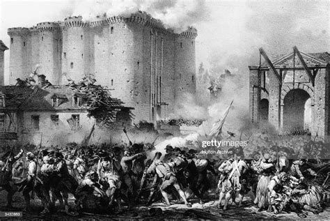

Under the rule of King Louis XV1 our country has been at nonstop war and financially crumbling. All are King can think of doing is rasing our taxes and himself paying nothing; that is to say our nobles are to blame for such tyranny. They forced our Kings hand. Lets look back on how France rose from the ashes of Tyranny
The three estates make up France's socail class. The very social class that is the french people, our people.
Because our country is on an epic economic decline our king, King Louis XV1 has appointed a finnacial expert Jacques Necker. Jacques despratly urged our king to reduce court spending, reform our government and abolish rediculous tariffs on internal trade. Despite Jacques wisdom the moment he even thought to mention taxing the First and Second estates they immediately force our king, Louis XV1 to dismiss Jacques from office.
As the year 1788 came to close my people, King Louis finally used the head upon his shoulders and called for the Estates-General to meet at Versaillas the following year. In May of 1789 the Estates-General met and listed off their grievances. Finally for the first time in almost 200 years our voice was heard my people. In June 1789 our people had had enough of the Tyranny that controlled our government. We declared oursleves to be the National Assembly upon which represented the people of France and seperated ourselves from the monarchy
On July 14th 1789 Paris stole the spotlight from the National Assembly. 800 parisians gathered outside the Bastille demanding weapons and gunpowder. The noble commander did the right thing and stood up for his honor by denying these people, however this denial escalated things qucikly. The people killed the commander and the guards. The capturing of the Bastille signaled the begining of our revolution and is truly how our great nation rose from the ashes of tyranny.
Continue to Page 2